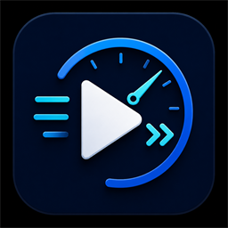

WatchDash Settings
Playback speed, auto-skip, and diagnostics for supported players
Playback Speed
1.00xHow far the hotkeys and popup arrows move per press (0.01 to 1).
Upper limit for every speed control (0.25 to 16).
Quality Target
1080pThe target compares decoded resolution against your pick. It does not force account, browser, or DRM quality.
Automation
Minimum delay between automated clicks of the same control (500 to 10000).
YouTube Assist
YouTube onlyAds play at this rate, then playback restores to your pre-ad speed.
Platforms
Each card lists only what its adapter can do. Chip state follows your automation switches; cooldowns are per action.
Backup
Export produces normalized settings for every platform.